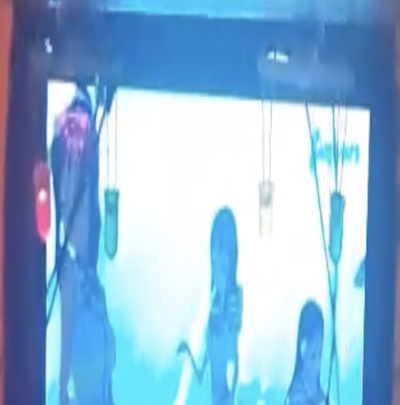

実装機能

|
LEDが輝く機能 ステージの近くにあるLEDと上にあるLEDがキラキラ輝きます。 |
|
明るさを感知する機能 明るいか暗いかによって、LEDが輝く方法が異なります。 暗いときはLEDがたくさん輝いています。 |
|
|  |
モーターを動作する機能 暗くするとLEDがきらめきながらモーターが作動するので、動くLEDになります。 |
背景と目的
コンピュータシステム入門 授業時間にArduinoで作品を作る課題がありました。 できるだけ創造的な作品を作るために制作することになりました。
コンピュータシステム入門 授業時間にArduinoで作品を作る課題がありました。 できるだけ創造的な作品を作るために制作することになりました。
学んだこと
- Arduinoでハードウェアを設計して実装する方法を学びました。
- LED、明るさセンサー、サーボモーターを活用する方法を学びました。
- Arduinoでポーリング方式を実装する方法と、ポーリング方式と割り込み方式の違いを学びました。
進行手順
- Arduinoのプログラミングを行う前に、ボックス、テープ、木の箸などを利用してステージモデルから実装しました。
- LED、明るさセンサー、サーボモーターの各サンプルプログラムを講義資料で見つけ、必要に応じて修正して1つにまとめました。
- ポーリング方式を使用して、明るさが暗いか明るいかによって異なる動作をします。
- 少し試行錯誤がありましたが、コードを綿密に確認して修正しました。
- このようにして目的のプログラムを実装できました。
能力強化のために最も努力したこと
Arduinoで創造的な作品を制作
Arduinoで創造的な作品を制作
全体構造

使用技術
Arduino
Arduino
開発環境
Arduino IDE
Arduino IDE